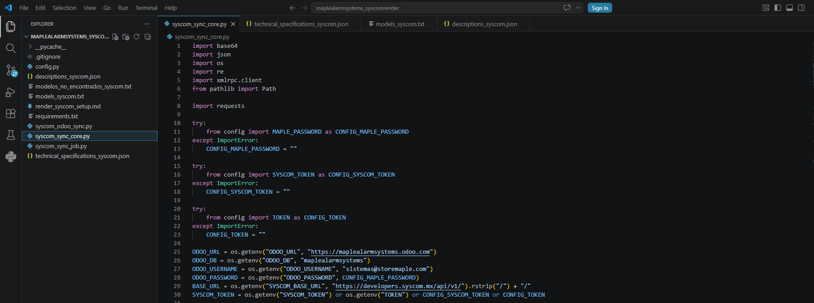

Lorenzo Iván Salamanca Córdoba
About Me
My name is Lorenzo Iván Salamanca Córdoba. I am passionate about programming, web development, cybersecurity, chemistry, and technology. I enjoy learning how software systems work and building practical applications using Python, JavaScript, databases, APIs, and Odoo integrations.
Current Interests & Goals

I am currently improving my skills in frontend and backend development, automation, API integrations, and responsive web design. My goal is to become a professional software developer capable of creating scalable, modern, and useful applications for real-world businesses and users.